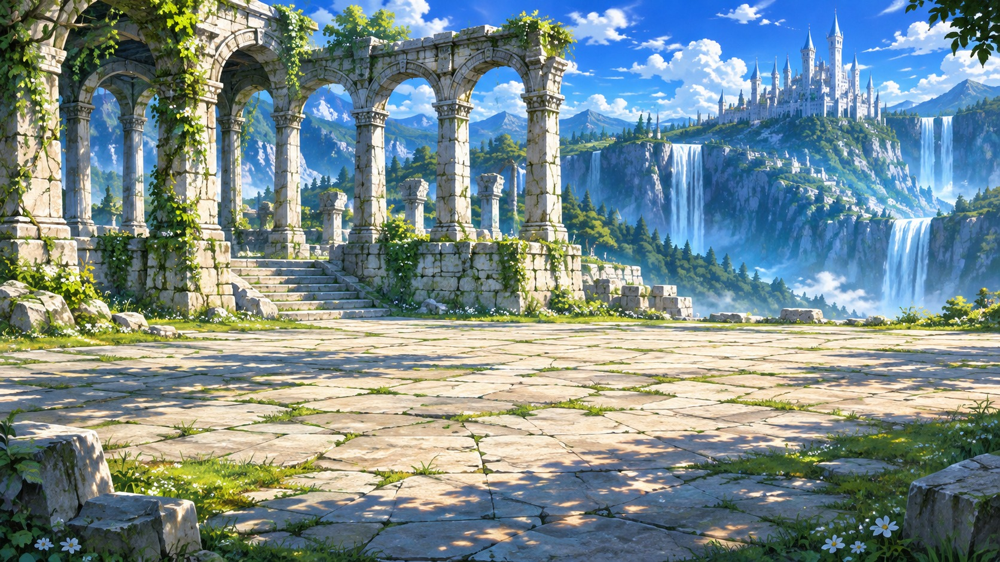
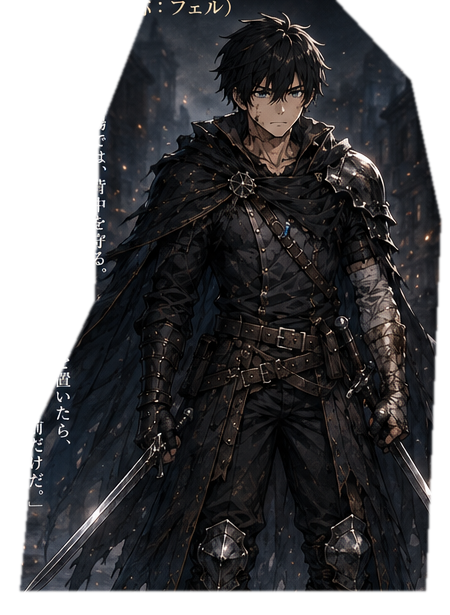
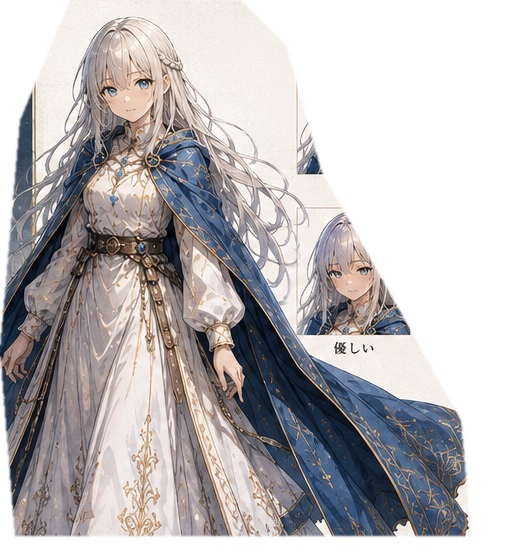
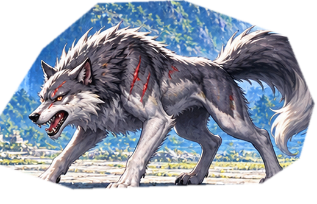

エルドラド遠征録
戦闘レイヤー構造 v2 — 背景・キャラクター・UI独立
第1章 天空の遺跡・東の丘 ☀ 晴れ

ワイルドウルフが現れた！ フェルたちはどうする？



フェルアリスワイルドウルフフェル
HP 260 / 260
MP 90 / 90
アリス
通常状態
HP 240 / 240
MP 260 / 260
攻撃：装備した二刀流の剣で敵単体を攻撃します。
ワイルドウルフ
HP 320 / 320